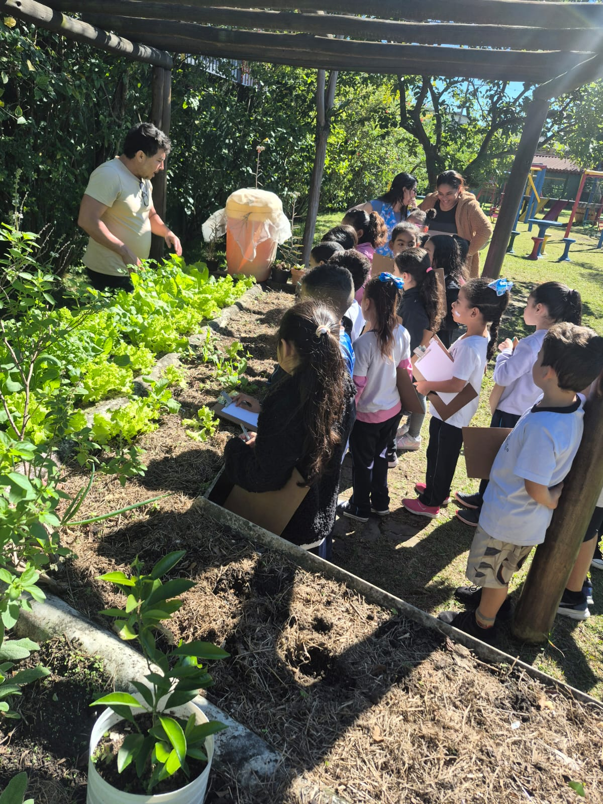
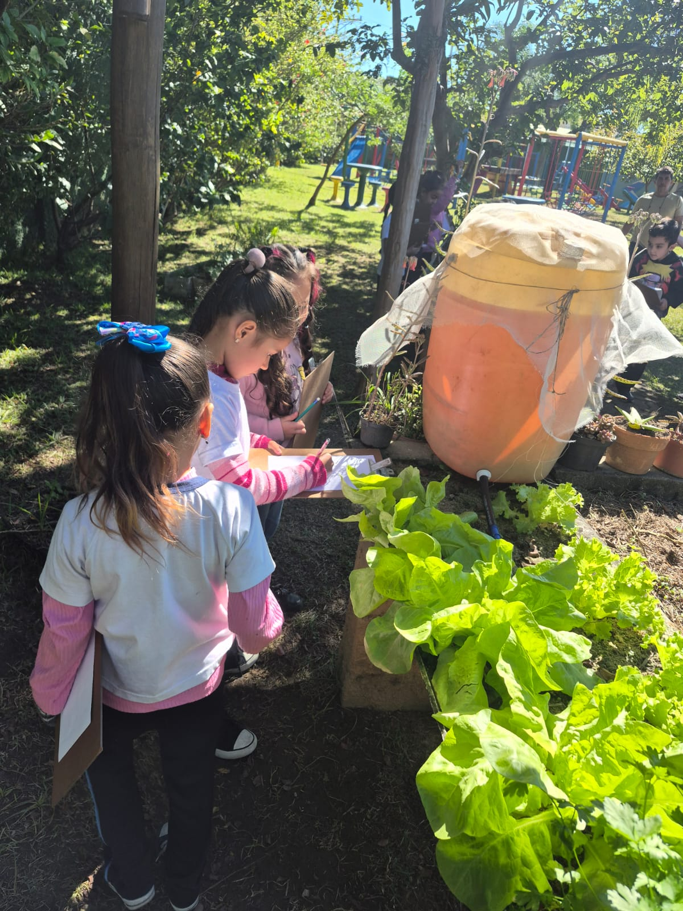
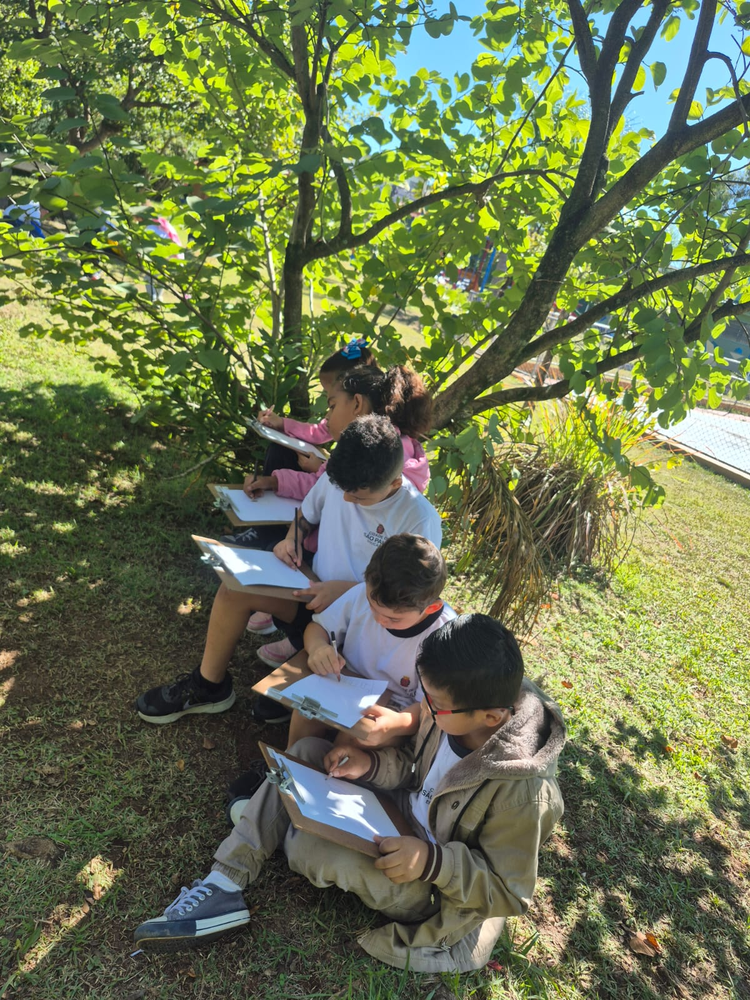
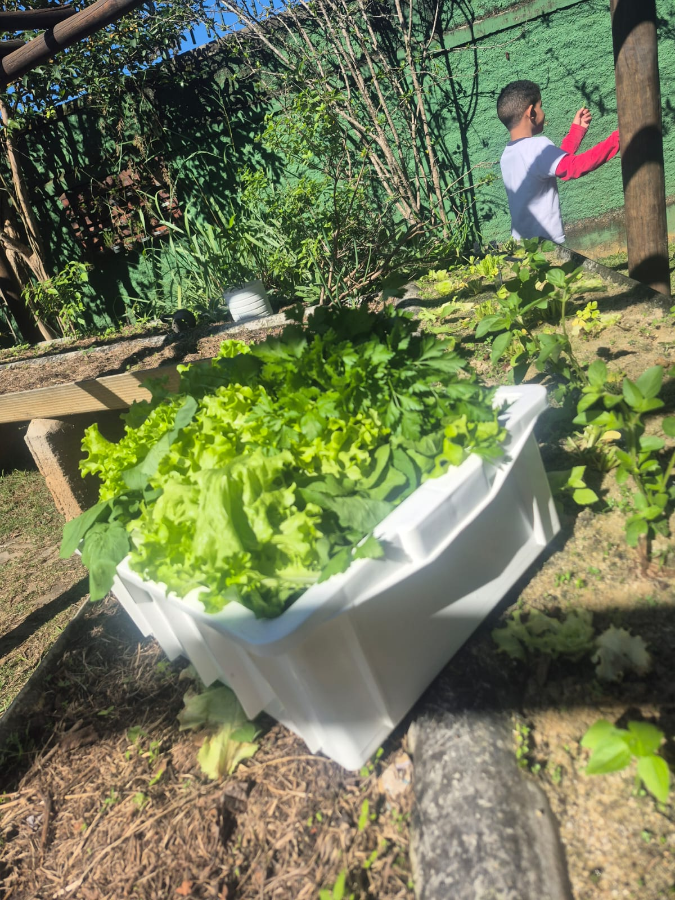

Na EMEF Newton Reis, 120 crianças do 1º ano vivem a escola em período integral. A jornada ampliada não é "mais do mesmo": é tempo para ler, brincar, criar, conviver e descobrir o mundo — sempre ancorada no Currículo da Cidade da SME-SP e no compromisso de formar a criança por inteiro.
A concepção de Educação Integral na Rede Municipal de Ensino de São Paulo nos desafia diariamente a superar as paredes da sala de aula tradicional e entender o território como um ecossistema educador. A Educação Integral engloba o desenvolvimento do sujeito em suas dimensões intelectual, física, social, emocional e cultural.
Ao pisar na terra, o ritmo do aprendizado muda. O que antes era teoria em livros ou conversas sobre alimentação e meio ambiente ganha forma, cor, cheiro e textura. As crianças não apenas observam; elas investigam com todos os sentidos.
Levar os estudantes para a horta não é apenas uma atividade extraclasse; é uma prática pedagógica intencional que reafirma que a cidade, a comunidade e a natureza também são salas de aula. Ao colherem o que plantaram, as crianças levam a consciência de que fazem parte de um ecossistema vivo e integrado.
"Educar integralmente é reconhecer que cada criança é única e chega à escola inteira."
O 1º ano é a porta de entrada no Ensino Fundamental — e o momento em que a criança constrói sua relação com a escola. Em período integral, esse encontro ganha tempo: tempo para alfabetizar sem pressa, brincar, se alimentar bem, conviver e criar vínculos.
Nosso trabalho segue o Currículo da Cidade (SME-SP), articulando os direitos de aprendizagem previstos para o ciclo de alfabetização com vivências que ampliam o repertório cultural, corporal e socioemocional das 120 crianças atendidas.
Esta página é viva: novas atividades, materiais e registros serão adicionados ao longo do ano letivo.
120 alunos do 1º ano do Ensino Fundamental
Período integral — jornada ampliada na escola
Professora Kelly Akemi · EMEF Newton Reis
10 educadores que recebem as crianças nos ambientes
Currículo da Cidade · SME-SP
Sala de leitura, sala de aula, sala de informática, sala de artes, quadra, horta, parque e pátio
ODS 4 (Educação de Qualidade) · ODS 3 (Saúde e Bem-Estar)
A base pedagógica que sustenta cada ação deste projeto.
A escola é território de formação humana em sentido amplo. Ampliar tempos, espaços e oportunidades educativas contribui para:
Promover a formação integral dos estudantes por meio da articulação entre currículo, cultura, corpo, convivência e projeto de vida.
Educação Integral é olhar para todas elas ao mesmo tempo.
Curiosidade, pensamento crítico e capacidade de investigar, argumentar e resolver problemas reais.
Autoconhecimento, empatia, regulação das emoções e habilidade de conviver com a diferença.
Movimento, esporte, alimentação e autocuidado como parte inseparável do aprender.
Arte, música, leitura e expressão como formas legítimas de conhecer e dizer o mundo.
Participação, responsabilidade coletiva e compromisso com o território e com o outro.
Sonhos, escolhas e futuro: ajudar cada estudante a descobrir quem quer ser.
Cada ambiente da escola é um espaço de aprendizagem — e cada um deles tem um professor que recebe as crianças.
A roda de história abre o encontro e, depois, cada criança escolhe seu livro. Entre almofadas e ilustrações, quem ainda não lê palavras já lê imagens — e conta a história do seu jeito para os colegas.
É onde tudo se costura: o que foi vivido na horta, na quadra e no parque volta em forma de escrita, desenho e conversa. O trabalho de alfabetização acontece com o corpo inteiro e com o que a turma trouxe de fora.
Primeiros contatos com o computador: jogos de letras e números, desenho digital e pesquisa guiada. As crianças aprendem a usar a tecnologia com intenção — e a dividir a máquina com o colega.
Tinta, argila, sucata e música. Aqui a criança experimenta materiais, erra sem medo e descobre que existem muitas formas de dizer o que sente quando as palavras ainda são poucas.
Brincadeiras cantadas, circuitos, jogos de perseguição e cooperação. O corpo aprende equilíbrio e ritmo, e a turma aprende a combinar regras, esperar a vez e perder sem desistir.
Ao pisar na terra, o aprendizado muda de ritmo: as crianças plantam, observam, registram em suas pranchetas e colhem o que cultivaram — descobrindo com todos os sentidos que fazem parte de um ecossistema vivo.
Brincar também é currículo. Subir, escorregar, equilibrar-se e inventar brincadeiras com os colegas: é no parque que a criança testa limites, faz acordos e constrói as primeiras amizades da escola.
Ponto de encontro da jornada: a refeição partilhada, a roda de conversa e as combinações do dia. É no pátio que a turma se organiza, se escuta e cuida do espaço que é de todos.
Os registros das atividades, organizados por ambiente.




As fotos das demais atividades serão publicadas aqui conforme forem acontecendo.
"[Depoimento do estudante sobre o que mudou para ele com o projeto.]"
"[Depoimento do estudante sobre o que mudou para ele com o projeto.]"
"[Depoimento de família ou educador sobre o impacto do projeto.]"
"[Depoimento do estudante sobre o que mudou para ele com o projeto.]"
Oito ambientes, dez professores parceiros e um só compromisso: que cada uma das 120 crianças encontre na escola o seu lugar.
Materiais, vídeos, planos de aula ou mural colaborativo podem ser inseridos aqui.
"Uma criança de seis anos não aprende só quando está sentada. Ela aprende quando lê, quando planta, quando corre, quando pinta e quando divide o lanche com o colega. Nosso trabalho é garantir que ela tenha tempo para tudo isso."
É esse o compromisso do período integral na EMEF Newton Reis: usar cada ambiente da escola e cada hora do dia para que as 120 crianças do 1º ano se formem por inteiro — no que sabem, no que sentem e no modo como convivem.
- Professora Kelly Akemi · EMEF Newton Reis